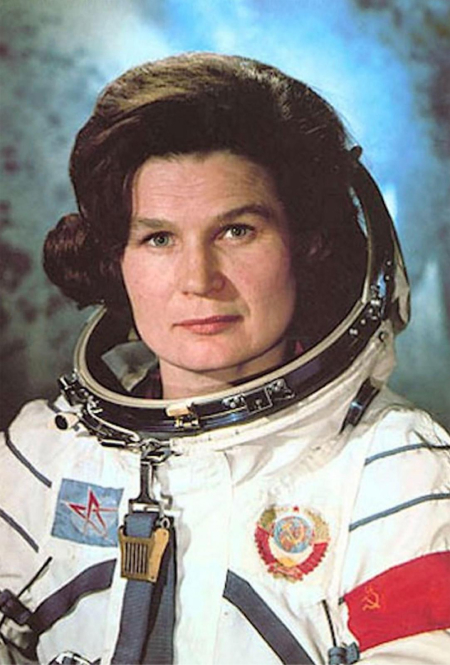

Этапы жизни В.В. Терешковой
Терешкова Валентина Владимировна — первая в мире женщина-космонавт, Герой Советского Союза, генерал-майор, депутат Верховного Совета СССР и Государственной Думы РФ.
Ранние годы
Валентина Терешкова родилась 6 марта 1937 в крестьянской семье в ныне несуществующей деревне Большое Масленниково недалеко от города Тутаева Ярославской области.
Отец — Терешков Владимир Аксёнович (1912-1940), родом из деревни Выйлово Белыничского района Могилёвской области, тракторист. Был призван в Красную армию в 1939 году, погиб на советско-финской войне. Мать — Терешкова (урождённая Круглова) Елена Фёдоровна (1913-1987), из деревни Еремеевщина Дубровенского района. В семье также были старшая сестра Людмила и младший брат Владимир.
После окончания Великой Отечественной войны, когда Елена Фёдоровна с детьми переехала в Ярославль, Валентина поступила в среднюю школу № 32 (ныне носит имя Терешковой).
Семь классов окончила в 1953 году. В 1954 пошла работать на Ярославский шинный завод. Одновременно училась в вечерних классах школы рабочей молодёжи. С апреля 1955 года семь лет работала ткачихой на комбинате технических тканей «Красный перекоп», где также трудились её мама и старшая сестра, заочно училась в техникуме лёгкой промышленности. С 1959 года занималась парашютным спортом в Ярославском аэроклубе (выполнила 90 прыжков). С августа 1960 года — освобождённый секретарь комитета ВЛКСМ комбината «Красный Перекоп». С марта 1962 года — член КПСС.
Карьера
Лётчик-космонавт СССР № 6, 10-й космонавт мира, единственная в мире женщина, совершившая космический полёт в одиночку, Валентина Владимировна Терешкова 12 марта 1962 года была зачислена для обучения в отряд космонавтов, а уже в ноябре 1962 года сдала выпускные экзамены на «отлично». С декабря 1962 года В.В.Терешкова — космонавт 1-го отряда 1-го отдела.
16 июня 1963 года на космическом корабле «Восток-6» Валентина Терешкова совершила свой первый полёт — первый в мире космический полёт женщины-космонавта, который продолжался почти трое суток.
Одновременно на орбите находился космический корабль «Восток-5», пилотируемый космонавтом Валерием Быковским. Позывной Терешковой на время полёта — «Чайка». Фраза, которую она произнесла перед стартом: «Эй! Небо! Сними шляпу!» — изменённая цитата из поэмы В. Маяковского «Облако в штанах». Спускаемый аппарат «Востока-6» благополучно приземлился в Баевском районе Алтайского края.
С 1963 по 1966 год Валентина Владимировна Терешкова — инструктор-космонавт 1-го отряда. С 1969 по 1997— инструктор-космонавт отряда космонавтов 1-го отдела 1-го управления группы орбитальных кораблей и станций, инструктор-космонавт-испытатель группы орбитальных пилотируемых комплексов общего и специального назначения, 1-й группы отряда космонавтов.
С 1997 года она — старший научный сотрудник Центра подготовки космонавтов.
После выполнения космического полёта В. В. Терешкова поступила в Военно-воздушную инженерную академию им. Н. Е. Жуковского и, окончив её с отличием, позднее стала кандидатом технических наук, профессором, автором более 50 научных работ.
Воинские звания: декабрь 1962 — младший лейтенант, июнь 1963 — лейтенант, июнь 1963 — капитан, январь 1965 — майор, октябрь 1967 — подполковник, апрель 1970 — инженер-полковник, с 1975 года — полковник-инженер, 1995 — генерал-майор. С 30 апреля 1997 года в отставке.
Валентина Владимировна Терешкова — первая в истории Российской армии женщина-генерал.
Сразу после полёта Терешкова В. В. активно занялась общественной деятельностью. Она представляла СССР во многих странах мира, избиралась на ответственные посты:
1966—1989 — депутат Верховного Совета СССР VII—XI созывов.
1968—1987 — председатель Комитета советских женщин.
1969 — вице-президент Международной демократической федерации женщин, член Всемирного Совета Мира.
1971—1990 — член ЦК КПСС. Делегат XXIV, XXV, XXVI и XXVII съездов КПСС.
1974—1989 — член Президиума Верховного Совета СССР.
1987—1992 — председатель Президиума Союза советских обществ дружбы и культурных связей с зарубежными странами.
1989—1992 — народный депутат СССР от Союза советских обществ дружбы и культурных связей с зарубежными странами и общества «Родина».
1992 — председатель президиума Российской ассоциации международного сотрудничества.
1992—1995 — первый заместитель председателя Российского агентства международного сотрудничества и развития.
1994—2004 — руководитель Российского центра международного научного и культурного сотрудничества.
2008—2011 — депутат Ярославской областной Думы от партии «Единая Россия», заместитель председателя Думы.
В 2011 избрана депутатом Государственной думы России 6-го созыва от партии «Единая Россия» по ярославскому региональному списку, заместитель председателя комитета Госдумы по международным делам.
В 2016 избрана депутатом Государственной думы России 7-го созыва от партии «Единая Россия» по ярославскому региональному списку.
Член Высшего совета «Единой России».
При содействии и участии Терешковой в Ярославле открыт университет, построены новое здание техникума лёгкой промышленности, речной вокзал, планетарий, благоустроена набережная Волги. Она постоянно оказывает помощь родной школе и подшефным детским домам Ярославской области.
С 2015 года — президент некоммерческого благотворительного фонда «Память поколений».
В.В. Терешкова — Почётный гражданин Ярославской области и городов: Ярославль, Тутаев, Мышкин, Калуга, Щёлково (Россия), Караганда, Байконур (до 1995 — Ленинск, Казахстан, 1977), Гюмри (до 1990 — Ленинакан, Армения, 1965), Витебск (Белоруссия, 1975), Монтрё и Дранси (Франция), Монтгомери (Великобритания), Полицци-Дженероза (Италия), Дархан (Монголия, 1965), София, Бургас, Петрич, Стара-Загора, Плевен, Варна (Болгария, 1963), Братислава (Словакия, 1963).
В.В. Терешковой присвоен титул «Величайшая женщина XX столетия».
Награды России и СССР:
Герой Советского Союза (22 июня 1963);орден «За заслуги перед Отечеством» I степени (3 марта 2017);орден «За заслуги перед Отечеством» II степени (6 марта 2007);орден «За заслуги перед Отечеством» III степени (6 марта 1997);орден Александра Невского (12 июня 2013 года);орден Почёта (10 июня 2003);орден Дружбы (12 апреля 2011 года);два ордена Ленина (22 июня 1963 и 6 мая 1981);орден Октябрьской Революции (1 декабря 1971);орден Трудового Красного Знамени (5 марта 1987);
звание лётчик-космонавт СССР;
Государственная премия Российской Федерации за выдающиеся достижения в области гуманитарной деятельности 2008 года (4 июня 2009 года);
медали;
медаль «За труды во благо земли Ярославской».
Почётная грамота Президента Российской Федерации (3 марта 2012);Благодарность Президента Российской Федерации (2 марта 2000);Благодарность Президента Российской Федерации (9 апреля 1996);
Почётная грамота Правительства Российской Федерации (16 июня 2008);Почётная грамота Правительства Российской Федерации (12 июня 2003);Почётная грамота Правительства Российской Федерации (3 марта 1997);Благодарность Правительства Российской Федерации (6 марта 2002).
Иностранные награды:
- Медаль «Золотая Звезда» Героя Социалистического Труда ЧССР;
- орден Клемента Готвальда (август 1963)
- медаль «Золотая Звезда» Героя Социалистического Труда НРБ
- орден Георгия Димитрова (9 сентября 1963)
- орден Карла Маркса и медаль Беккера (октябрь 1963, ГДР)
- Крест Грюнвальда I степени (октябрь 1963, ПНР
- орден Тришакти Патта I степени (ноябрь 1963, Непал)
- орден Звезды Республики Индонезия II степени (ноябрь 1963)
- орден Вольты (январь 1964, Гана)
- орден Государственного Знамени ВНР (апрель 1965)
- медаль «Золотой Соёмб» Героя труда МНР и орден Сухэ-Батора (май 1965, МНР)
- орден Культуры 1 степени (август 1969, Афганистан)
- большая лента ордена Звезды Иордании (декабрь 1969, Иордания)
- орден «За гражданские заслуги» (Сирия)
- орден «Ожерелье Нила» (январь 1971, ОАР)
- медаль «Золотая Звезда» Героя Труда Вьетнама (октябрь 1971)
- орден Бернардо О’Хиггинса и Золотой знак ВВС (март 1972, Чили)
- орден Югославского флага 1 степени (ноябрь 1972)
- орден «За достижения в науке» (17 ноября 1973, СРР)
- орден Солнца (1974, Перу)
- орден Плайя-Хирон и орден «Ана Бетанкур» (1974, Куба)
- медаль «За укрепление братства по оружию» (1976, НРБ)
- орден Дружбы (1997, Лаос)
- орден князя Бранимира с большой лентой (17 февраля 2003, Хорватия).
Награды научных, общественных и религиозных организаций:
- олотая медаль имени К. Э. Циолковского АН СССР;золотая медаль Британского общества межпланетных сообщений «За успехи в освоении космоса» (февраль 1964, Великобритания)
- золотая медаль «Космос» (ФАИ)
- премия Галамбера по астронавтике
- золотая медаль Мира имени Жолио-Кюри (1964, Франция)
- орден «Роза ветров» Международного комитета по аэронавтике и космическим полётам
- «Золотая мимоза» итальянского Союза женщин (1963)
- знак ЦК ВЛКСМ «За активную работу в комсомоле» (1963)
- золотая медаль ВДНХ (28 июня 1963)
- почётный знак ДОСААФ СССР (1 июля 1963)
- премия общественного признания достижений женщин «Олимпия» (2003)
- Национальная премия «Россиянин года» в номинации «Легенда России» (2004)
- орден преподобного Серафима Саровского II степени (РПЦ; 2007)
- орден преподобной Евфросинии, великой княгини Московской II степени (РПЦ; 2008)
- орден Славы и Чести I степени (РПЦ; 6 марта 2012)
- императорский орден Святой Великомученицы Анастасии (12 июля 2013 года, Российский императорский дом).
Именем В. В. Терешковой названы:
- кратер на Луне
- малая планета 1671 Chaika (по её позывному — «Чайка»)
- улицы в разных городах, в том числе в Ярославле, Тутаеве, Одессе, Улан-Удэ, Новосибирске, Красноярске, Костроме, Кемерово, Ульяновске, Оренбурге, Балахне, Липецке, Иркутске, Новочебоксарске, Витебске, проспект в Гудермесе, площадь в Твери, набережная в Евпатории
- школы: в Ярославле (в которой она училась), в Новочебоксарске, в Караганде и в городе Есик (Алматинская область)
- музей «Космос» (недалеко от её деревни) и Культурно-просветительский центр имени В.В.Терешковой (планетарий) в Ярославле
Установлено два памятника Терешковой: на Аллее космонавтов в Москве и в Баевском районе Алтайского края, на территории которого она приземлилась.
В 1983 году была выпущена памятная монета с изображением В. Терешковой. Таким образом, Валентина Терешкова стала единственным советским гражданином, чей портрет был при жизни помещён на советскую монету.